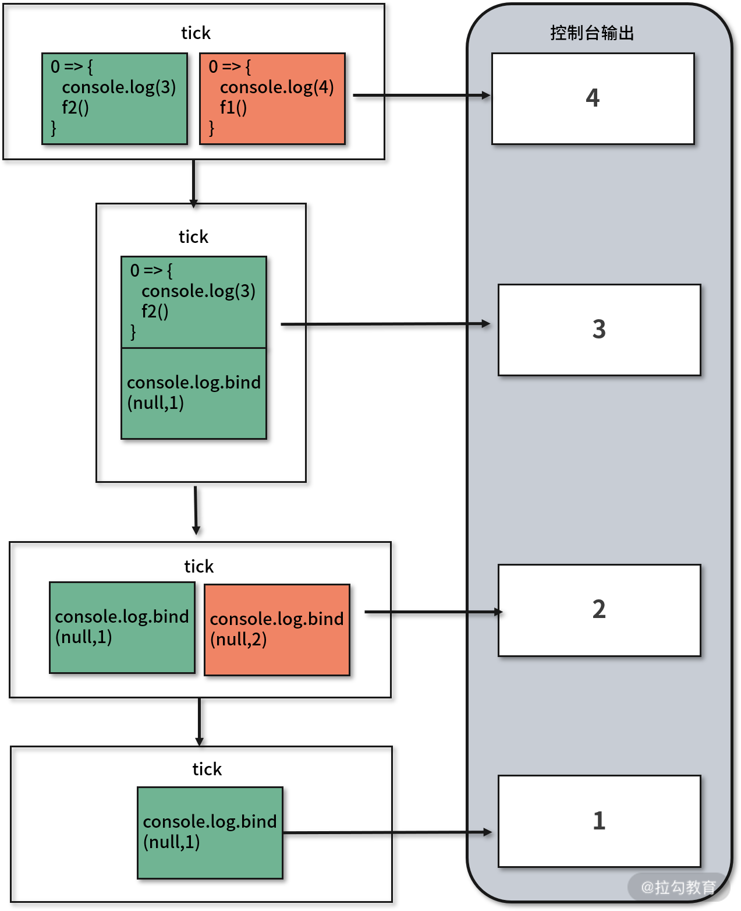

前端工程师算是最幸运的软件工程师，因为从一开始就可以接触到“异步”这种高级特性，比如 DOM 事件、AJAX 请求及定时器；同时也是最不幸的软件工程师，因为入门 JavaScript 的时候就要习惯异步这种高难度的开发方式，比如上一课时提到的那道经典的笔试题，就是异步造成的输出结果与预期不一致。
这一节就来深入讲解前端工程师熟悉但并不完全了解的 JavaScript 异步。
一、了解异步
异步和同步
相比异步而言，大多数工程师可能更熟悉的是同步。
要比较同步和异步，可以将调用函数的过程分成两部分：执行操作和返回结果。
程序在同步调用函数的时候，会立即执行操作并等待得到返回结果后再继续运行，也就是说同步执行是阻塞的。
而异步会将操作和结果在时间上分隔开来，在当下执行操作，在未来某个时刻返回结果，在这个等待返回结果的过程中，程序将继续执行后面的代码。也就是说异步执行是非阻塞的。
再举个简单的例子来说明同步和异步。
下面的代码定义了同步函数 syncAdd 和异步函数 asyncAdd，调用 syncAdd(1,2) 函数时会等待得到结果之后再执行后面的代码。而调用 asyncAdd(1,2,console.log) 时则会在得到结果之前继续执行，直到 1 秒后得到结果并打印。
1 | function syncAdd(a, b) { |
异步与回调
如果你经常调用 JavaScript 的异步函数可能会形成一个结论：异步操作都采用回调函数的形式。
毕竟从浏览器端的 DOM 事件、AJAX 请求、定时器到 Node.js 端的文件读写、多进程，都是采用的回调形式。但事实真是如此吗？
下面是一段简单的代码，定义了一个 JSON 对象 a，然后把它打印到控制台，最后再将对象 a 的 couter.index 属性值自增 1。
1 | var a = { |
如果你把上面的代码复制粘贴到浏览器控制台中运行，应该可以看到控制台打印了一个可能和你预期不一致的 JSON 对象：{conter:{index: 2}}。
原因在于浏览器在运行代码的时候，把控制台打印这种涉及 I/O 的操作进行了延迟执行。可能你会猜想是不是控制台打印的只是将对象 a 进行了类似“浅拷贝”的操作，否定这种猜想很简单，此时再执行一次自增操作，就会发现被打印的对象值并没有发生变化。
既然并非所有异步都回调，那么反过来，是否所有回调函数都是异步执行的呢？答案也是否定的。
在上一课时中我们就提到过回调形式的同步函数，比如数组原型函数 forEach，又比如改变 this 指向的 call。
二、异步原理
回顾了异步的基础概念，下面就来深入讲解异步的原理。
事件循环
对于大多数语言而言，实现异步会通过启动额外的进程、线程或协程来实现，而我们在前面已经提到过，JavaScript 是单线程的。
为什么单线程还能实现异步呢？
其实也没有什么特殊的黑魔法，只是把一些操作交给了其他线程处理，然后采用了一种称之为“事件循环”（也称“事件轮询”）的机制来处理返回结果。
下面用一段简化的代码，来帮助你快速地理解事件循环机制。
数组 eventLoop 表示事件队列（也有称作“任务队列”），用来存放需要执行的任务事件（可以理解为回调函数），对象 event 变量表示当前需要执行的任务事件。
用一个永不停止的 while 循环来表示事件循环，每一次循环称为一个 tick。
对每个 tick 而言，如果在队列中有等待事件，那么就会从队列中获取一个事件并执行，这些事件通常是回调函数的形式。
1 | var eventLoop = []; // 事件队列，先进先出 |
那么这个事件队列里的事件是怎么来的呢？
以 AJAX 请求为例，当我们发出一个 AJAX 请求时，浏览器会将请求任务分派给网络线程来进行处理，当对应的网络线程拿到返回的数据之后，就会把回调函数插入到事件队列中。
setTimeout 和 setInterval 也是同样的道理，当我们执行 setTimeout 的时候并不是直接把回调函数放入事件队列中。它所做的是交给定时器线程来处理，当定时器到时后，再把回调函数放在事件队列中，这样，在未来的某轮 tick 中获取并执行这个回调函数。
这么做有一个隐性的问题，如果事件队列中已经有其他事件，那么这个回调就会排队等待。
所以说 setTimeout/setInterval 定时器的精度并不高。准确地说，它只能确保回调函数不会在指定的时间间隔之前运行，但可能会在那个时刻运行，也可能在那之后运行，这就要根据事件队列的状态而定。
事件队列
在讲述 setTimeout/setInterval 原理的时候也暴露了事件队列的一个缺陷：事件队列按照先进先出的顺序执行，那么如果队列较长时，排在后面的事件即使较为“紧急”，也得需要等待前面的任务先执行完成。
JavaScript 解决这个问题的思路就是：设置多个队列，按照优先级来执行。
下面这段代码可以验证 JavaScript 内部拥有优先级不同的 2 个队列，在下图中分别用绿色和红色表示，其中红色队列优先级高于绿色队列。
这段代码定义了 4 个异步函数 f1、f2、f3、f4，其中：
- 函数 f1 通过定时器 setTimeout 向绿色队列中插入一个控制台打印任务，输出数字 1；
- 函数 f2 通过 Promise 向红色队列中插入一个控制台打印任务，输出数字 2；
- 函数 f3 通过定时器 setTimeout 向绿色队列中插入一个回调函数，该回调函数会调用控制台打印数字 3，并且调用函数 f2；
- 函数 f4 通过 Promise 向红色队列中插入一个回调函数，该回调函数会调用控制台打印数字 4，并且调用函数 f1。
1 | function f1() { |
这段代码的执行过程和结果可以查看下图，当调用函数 f3 和函数 f4 之后，绿色队列和红色队列都会被插入一个匿名回调函数。
- 第 1 次 tick，由于红色队列优先级高，所以先执行红色匿名函数，控制台打印数字 4，然后调用函数 f1，向绿色队列中插入一个打印函数；
- 第 2 次 tick，按照先进先出原则，此时调用匿名函数打印数字 3，并调用函数 f2，向红色队列中插入一个打印函数；
- 第 3 次 tick，调用红色队列中的打印函数，控制台打印数字 2；
- 第 4 次 tick，调用绿色队列中的打印函数，控制台打印数字 1。

关于红色队列和绿色队列，一般称为“宏任务队列（Macro Task Queue）”和“微任务队列（Micro Task Queue）”，也有的称为“Task Queue”和“Job Queue”。不管如何称呼，我们需要记住的是，不同队列优先级不同，每次事件循环时会从优先级高的队列中获取事件，只有当优先级高的队列为空时才会从优先级\**低**\的队列中获取事件，同级队列之间的事件不存在优先级，只遵循先进先出的原则。**
常见的异步函数优先级如下，从上到下优先级逐层降低：
1 | process.nextTick(Node.js) > |
三、处理异步
由于回调函数这种形式的代码可读性非常差，所以在编写代码的时候要尽量将回调形式转化成返回 Promise 对象的形式，一方面由于 ES6 标准下提供了原生 Promise 对象及方法，另一方面 Promise 的可操作性也更强，比如可以配合 async/await 关键字使用，也可以转换成 Observable 对象。所以越来越多的第三方库异步函数都开始返回 Promise 对象。
下面我们就以 Promise 形式的异步函数为例，讲解几个常见的异步场景。
异步串行
将异步转化为串行执行是非常常见的操作，先通过一个简单的例子来回顾基本实现方式。
考虑异步函数 asyncF1 和 asyncF2，且 asyncF2 依赖 asyncF1 的返回结果执行。使用 Promise 提供的 then 函数可以直接实现，伪代码如下：
1 | asyncF1() |
如果使用 async/await 可以摆脱链式调用，代码可读性更好：
1 | (async function() { |
回顾完基础用法，来提升一下难度。假设现在要按照顺序执行调用 asyncF 函数 n 次，该怎么实现呢？
对于这种场景可以通过数组函数 reduce 来实现，而不是简单地使用 for 循环或数组的 forEach 函数，比如像下面这样：
1 | [1...n].reduce(async (lastPromise, i) => { |
再升级一下难度，通过一道笔试题来加深理解。
现在需要延迟打印数组 [1,2,3,4,5]，每一次打印的初始延迟为 1000ms，增长延迟为 500ms。打印结果如下所示：
1 | 0s: 1 |
这道题也是将多个异步函数改为串行执行的典型例子，所以也可以通过 reduce 函数来实现。由于引入了递增的延迟执行，所以都需要得到上一次执行的延迟时间。具体代码如下：
1 | const arr = [1, 2, 3, 4, 5] |
异步并行
并行也是异步常用的场景，重点掌握下面 3 个静态函数。
（1）Promise.all([promise1 …… promiseN])
调用函数 Promise.all 会返回一个新的 Promise 实例，该实例在参数内所有的 promise 都完成 (resolved) 时回调完成 (resolve)；如果参数中 promise 有一个失败（rejected），那么此实例返回第一个失败 promise 的结果。
当执行的异步函数具有强一致性时可以使用它，比如要更新一个较大的表单数据，会发送多个请求分别更新不同的数据，如果一个请求更新失败则放弃本次提交。
（2）Promise.allSettled([promise1……promiseN])
调用函数 Promise.allsellted 会返回一个新的 Promise 实例，该实例会在所有给定的 promise 已经执行完成时返回一个对象数组，每个对象表示对应的 promise 结果。
这个函数适用于需要并发执行多个异步函数，这些异步函数的执行结果相互独立。比如同时发送多个 AJAX 请求来分别更新多条数据。
（3）Promise.race([promise1……promiseN])
调用函数 Promise.race 会返回一个新的 promise 实例，一旦参数中的某个 promise 执行完成，新的 promise 实例就会返回对应 promise 的执行结果。
这个函数会让多个并发函数产生“竞争”，从而挑选出最先执行完成的。比如尝试从多个网址加载图片资源。
异常处理
Promise 有一个隐藏的“坑”，那就是内部的异常不能在外部通过 try/catch 所捕获，当内部发生异常时，会自动进入失败状态（rejected）。所以下面的代码是等价的：
1 | new Promise((resolve, reject) => { |
所以建议尽量使用 catch 子句而不是在 then 子句中捕获 Promise 异常，因为这样可以捕获 then 子句中的异常信息。
1 | Promise.resolve(1) |
四、补充：Promise 的局限性
虽然 Promise 相对于回调具有明显的优势，但其仍然有一些局限性，至少有下面 2 个方面的问题。
立即执行
当一个 Promise 实例被创建时，内部的代码就会立即被执行，而且无法从外部停止。比如无法取消超时或消耗性能的异步调用，容易导致资源的浪费。
单次执行
Promise 处理的问题都是“一次性”的，因为一个 Promise 实例只能 resolve 或 reject 一次，所以面对某些需要持续响应的场景时就会变得力不从心。比如上传文件获取进度时，默认采用的就是通过事件监听的方式来实现。
所以说 Promise 并不是万能的，全面了解其优缺点能帮助我们更好地使用 Promise。上述这些问题其实都有解决方案，比如使用 RxJS，期待你在工作中多思考、多积累，找到更多更好的解决方案。
五、总结
这一课时涉及了 JavaScript 的核心特性——异步，先从异步概念说起，然后深入异步原理讲述了事件循环和事件队列，最后列举了 3 个常见异步场景的处理方法。异步属于笔试题必考的考点，比如任务队列部分，将 setTimeout/Promise/nextTick 这些异步函数和对象进行任意组合即可出题，所以一定要理解原理。
最后布置一道思考题：尝试使用 RxJS 实现多个 Promise 的串行和并行，并说说它在处理异步方面的优缺点。
Tips: Please indicate the source and original author when reprinting or quoting this article.